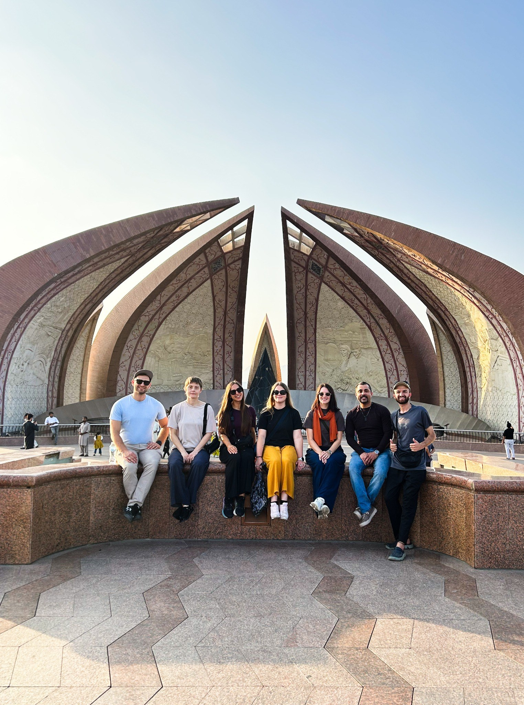

Islamabad — arrival & Faisal Mosque
Arrive in Islamabad, where our team will meet you at the airport and transfer you to the hotel for breakfast and a short rest. After lunch, we’ll have time to exchange money before visiting the iconic Faisal Mosque and taking a relaxed stroll at Daman-e-Koh for sweeping views over the city. We’ll return to the hotel for dinner.
Islamabad
